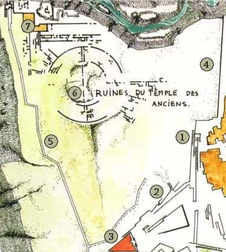

Les ruines du temple des Anciens
S'il n'est pas interdit de se rendre officiellement dans les ruines du temple des Anciens, sur la terrasse du Châtiment, il faut en faire la demande à l'administration du Roi-Dieu et auprès des quatre temples simultanément, ce qui complique singulièrement l'affaire et peut durer des mois. De plus, le simple refus d'un seul des temples suffit à mettre fin à la procédure. En cas d'acceptation, et après avoir payé la taxe correspondante, les explorateurs se voient remettre un laissez-passer à présenter aux gardes de la rampe principale, qui leur donnent alors en échange des amulettes permettant de désamorcer les pièges magiques pour le retour. Il est à noter que ces amulettes ne servent qu'une seule fois, et protègent uniquement son porteur. Au retour, les explorateurs sont fouillés avec zèle et passés à l'épreuve de toutes sortes de sorts de détection afin de repérer d'éventuelles intrusions malfaisantes.
Les points de passage mineurs (la rampe d'accès secondaire et la rampe d'accès au Lazaret) sont interdits aux profanes et réservés aux prêtres des temples de Laelith (ceci n'inclue pas les clercs simplement affiliés), mais en réalité ils ne sont presque jamais utilisés. Seuls quelques clercs qui possèdent des amulettes à effet permanent passent par là pour aller quérir des plantes curatives rares ou mener des investigations sur des phénomènes ayant attiré l'attention des temples. Le dernier accès possible, beaucoup moins officiel, est en escaladant le parapet du Châtiment, mais il faut avoir une certaine dose d'inconscience pour traîner dans ce quartier.
Nous ne mentionnerons pas ici le pont des Illusions, qui relie le temple à la Haute Terrasse, car quiconque l'emprunte signe son arrêt de mort immédiat.
Le temple
1. Rampe d'accès principale. Le portique d'entrée est en métal sombre couvert de runes argentées. Il est à sens unique et permet le passage sans aucun problème de la terrasse du Châtiment vers les ruines du temple des Anciens. Par contre, si l'on essaye de passer dans l'autre sens sans l'amulette, une silhouette fantomatique de guerrier en harnois apparaît, et délivre le message suivant : « Passage interdit en vertu de l'édit de Mendukar. Veuillez rebrousser chemin ». Si l'on persiste à vouloir passer, le portique se met à bourdonner et la surface se couvre de petits éclairs bleutés avant de délivrer une attaque de foudre violente. Au bas de la rampe se trouve un poste de garde tenu par des soldats de la garde et encadrés par des clercs chevronnés.
2. Rampe d'accès secondaire. Le portique de ce passage est de taille plus modeste que celui de la rampe d'accès principale. Il se présente sous la forme d'une arche de pierre où sont sculptés des visages grimaçants. Si l'on essaye de passer sous l'arche, la même silhouette fantomatique qu'à la porte principale apparaît, et délivre la même mise en garde. Deux ou trois gardes du poste sont en permanence de faction à cette entrée. Eux ne remettent aucune amulette.
3. Rampe d'accès au Lazaret. Le portique de ce passage est semblable à celui de la rampe secondaire, mais en beaucoup plus large. Il permet de faire passer des chariots. Là aussi, la même silhouette fantomatique qu'à la porte principale apparaît, et délivre la même mise en garde si l'on tente de sortir par ici. C'est en fait par cette porte que les prêtres du Lazaret, dans un pur élan de bonté d'âme, se débarrassent discrètement, la nuit, des malades incurables ou des déments à leur charge.
4. Le parapet du Châtiment. Un simple muret d'à peine un mètre de haut borde toute la place du temple des Anciens qui surplombe la terrasse du Châtiment. En dessous, neuf mètres plus bas, se dressent les habitations de ce quartier à sinistre réputation. Les plus déterminés des parias, ceux qui veulent retourner à la civilisation, tentent parfois de passer par là. En effet, la garde de la ville ne s'aventure pas à l'intérieur de cette terrasse et ne patrouille donc pas le long de ce mur.
5. Les murailles de la cité sainte. Des golems de fer patrouillent en permanence dans cette zone de la muraille qui jouxte la zone la plus dangereuse de la cité sainte, programmés pour détruire toute intrusion venue de l'extérieur ou toute tentative d'escalade de la muraille depuis la terrasse. À tout moment, les prêtres chargés de la défense de cette zone peuvent invoquer des aides surnaturelles pour renforcer les golems.
6. Les ruines du temple des Anciens. Dans cette zone subsistent des ruines cyclopéennes de ce que fut le temple des Anciens avant le Châtiment, dont les historiens s'accordent à dire qu'il fut l'épicentre du séisme provoqué par les dieux ce jour là. C'est un lieu désolé et étrangement silencieux où plane une omniprésente impression de déprime séculaire. Quand vient la nuit, une brume épaisse monte du sol et noie l'endroit, lui conférant une aura de pure horreur gothique. Des morts-vivants sortent alors des cryptes et se répandent sur toute la place, pourchassant les déments qui osent s'y aventurer. Les autorités ne font rien, car ces créatures seraient d'anciens grands prêtres. Comme ils se cantonnent aux ruines et ne pénètrent pas en ville, tout le monde préfèrent laisser la situation en l'état.
7. La forteresse de l'Herzog Bogomolet. C'est le seul bâtiment encore à peu près en état sur toute la place. Il se présente sous la forme d'un grand édifice haut de neuf mètres, avec un toit en terrasse, une grande double porte de bronze et des murs percés de meurtrières. Ici réside l'Herzog Bogomolet, le chef d'une étrange cour des miracles composée de gamins abandonnés et de jeunes parias, venus de toute la cité s'installer ici pour un voyage sans retour. Tous vivent dans une unique et immense pièce, baignée de vapeurs d'encens, au fond de laquelle se trouve une estrade et un trône de pierre où se prélasse le prince. La faune locale vit de la cueillettes des champignons qu'on trouve partout dans les ruines, du piégeage de petits rongeurs et d'autres mets plus improbables. À la nuit tombée, tous s'enferment dans la forteresse pour échapper aux créatures mortes-vivantes qui rôdent dans les ruines.
Personnalités
L'Herzog Bogomolet
L'Herzog Bogomolet. Nul ne sait d'où vient l'Herzog Bogomolet, alias « Bogo », alias « le prince du temple des Anciens », un être sans âge, au teint jaunâtre et à la dentition désastreuse, qui dit être le premier résident de son palais et donc... de son royaume. Pour les siens, cette petite stature d'à peine un mètre soixante de haut et aux yeux noirs est immortel, et personne n'oserait affirmer le contraire sous peine d'affronter son courroux et son terrible couperet de boucher enchanté appelé « le Tranchoir ». Affalé sur son trône de pierre, il vit dans les vapeurs d'encens et de drogues tirées de mousses et de champignons poussant dans son royaume. De mémoire de paria, on ne l'a jamais vu quitter son trône, même pour satisfaire un besoin naturel. Parfois, au sortir d'un rêve, il délivre à son peuple des augures hermétiques que tous s'efforcent de percer pour atteindre la sagesse. Il a le droit de vie ou de mort sur son peuple et sur tous ceux qui s'aventurent sur ces terres pendant les heures du jour.
Sun Wu l'anachorète. C'est un vieillard tout sec, à la peau jaune et aux yeux bridés, qui vit au sommet d'une colonne de pierre haute de 9 mètres, non loin de l'ancienne entrée du temple. Il s'y est installé il y a plus de 20 ans et y mène une vie contemplative, ne descendant jamais de son perchoir. Ses cheveux et sa barbe ont poussé si longs qu'ils s'enroulent autour de la colonne. On murmure que son esprit aurait atteint un tel niveau d'illumination qu'il n'aurait plus besoin de nourritures physiques. Il ne semble pas craindre les morts-vivants et autres esprits malfaisants rôdant dans le coin. En effet, un cercle permanent de protection contre le mal et le bien entoure la base de sa colonne, et il n'est pas rare de voir des oiseaux ou des petits rongeurs venir nicher dans sa barbe. En fait, Sun Wu est un maître psionique qui a atteint un niveau de maîtrise légendaire de ses pouvoirs, et qui aspire désormais à la séparation définitive du corps et de l'esprit.
Tumladonne « le borgne »
Tumladonne « le borgne ». C'est le premier lieutenant de Bogo, son homme de confiance et son âme damnée. Ancien voleur de la guilde des Canailles Associées, il a été laissé pour mort par ses acolytes après un diffèrent portant sur le partage du butin. Il s'est vengé d'eux, mais a du se cacher par la suite sur la terrasse du Châtiment pour échapper à un contrat lancé sur sa tête. C'est là qu'il a entendu parler d'un trésor caché dans les ruines du temple des Anciens. Il s'y est rendu dans l'espoir de se préparer une retraite dorée, mais en lieu du magot, il a rencontré l'Herzog Bogomolet, qui est devenu son nouveau maître. Il ne s'en plaint pas car, dans ses nouvelles fonctions, il peut laisser libre court à sa cruauté naturelle sur les pauvres hères qui sont les sujets de son maître. Il affectionne le garrot et les poisons violents. Pas encore la trentaine, grand, les chevaux blonds noués en queue de cheval, Tumladonne, contrairement aux autres résidents, est très à cheval sur l'hygiène corporel. Il affectionne le parfum et on le reconnaît à son odeur de parfum sucré qui signe d'ailleurs tous ses méfaits. Il est également un des rares résidents du royaume à se rendre régulièrement sur la terrasse du Châtiment, en empruntant le parapet du Châtiment, afin d'y faire des affaires pour le compte de son seigneur. Il déteste les elfes et ne supporte pas les réflexions sur son statut de sang-mêlé. On murmure à son sujet bien des choses innommables.